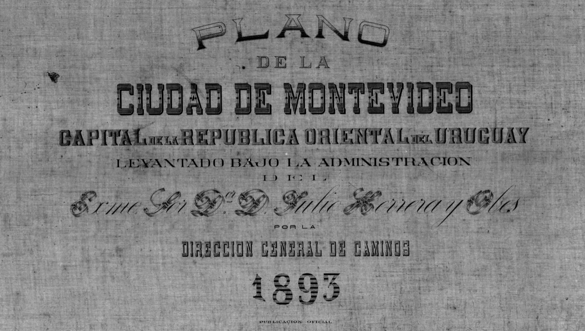

Acerca de
Montevideo 1894 - 2023
Motivado por el proyecto Forma urbis romae, que presenta una recopilación de documentos cartográficos de distintas épocas para visualizar el desarrollo de la ciudad de Roma, surgió la idea de llevar a cabo un proyecto similar para la ciudad de Montevideo. Partiendo del mapa de Montevideo elaborado en 1894 durante la presidencia de Julio Herrera y Obes, un documento de alta precisión técnica conservado y digitalizado por la Biblioteca Nacional en su Colección Digital, inicié el proceso de vincular registros con una brecha temporal de 130 años.
Este enfoque comparativo no solo resalta la importancia histórica del proyecto, sino que también ofrece una perspectiva única sobre la ciudad y su desarrollo a lo largo del tiempo. El resultado reveló no solo cambios urbanos y arquitectónicos, sino también detalles sutiles que contribuyen a comprender la transformación de Montevideo a lo largo de las décadas.
Este proyecto utiliza:


Facundo Colombo
Nacido en Montevideo en 1994. Ingeniero Tecnológico en electrónica de profesión y curioso por pasión. Siempre interesado por el origen e historia de la ciudad encontré en esta idea la oportunidad de unirlo con el desarrollo de conociemineto en el campo de programación y diseño web.